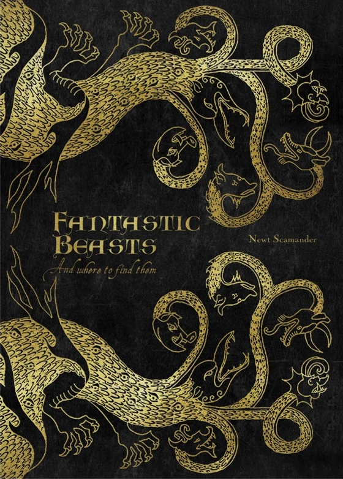

Hogwarts Library
Fantastic Beasts: And Where To Find Them (The 52nd Edition) is a book published in 1927 and famously written by Newt Scamander. The book entails Scamanders adventures as a Holder of Rare Creatures and talks of all the Creatures he has seen or cared for in his time. Many rare and fascinating creatures are talked about in this book and Scamander describes in some detail of where you can find and how you can care for these creatures if you wish to do so yourself.

Written by Newt Scamander; Nonfiction, Published in 1927. 52nd Edition
Scamander, Newt; Famous Author and Holder of Rare Creatures
Some of the Creatures from Scamanders: Fantastic Beasts And Where To Find Them